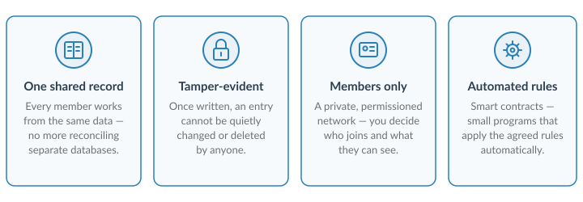
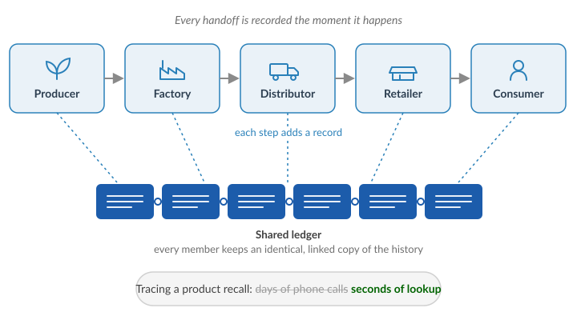
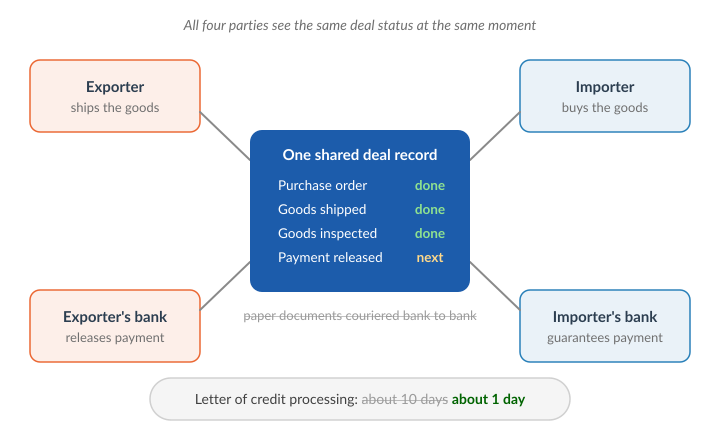
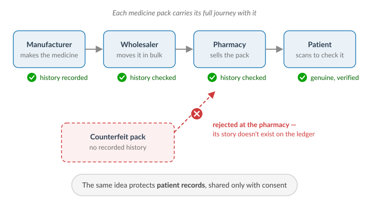
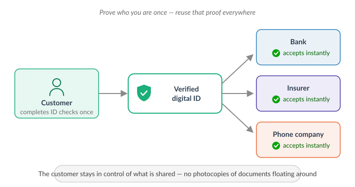
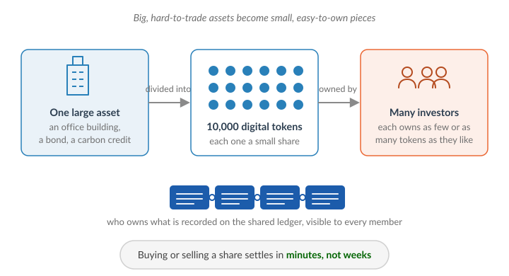

Blockchain Use Cases
The rest of this manual shows you how to build a Hyperledger Fabric network with the SutR Dashboard. This page answers a different question: what do businesses actually use these networks for?
Think of an enterprise blockchain as a shared record book. Several organizations write into the same book, every member keeps an identical copy, and once something is written nobody can quietly change or erase it. No single company owns the book, yet everyone can trust what it says. That one idea powers everything below.

Here are five of the most prominent ways enterprises put this to work today — in plain language, no technical background needed.
1. Supply Chain Traceability
The problem today: a product passes through many hands on its way to you — growers, factories, shippers, warehouses, stores. Each company keeps its own separate records, so when something goes wrong (say, a batch of food is found to be contaminated), working out where it came from and where the rest of the batch went takes days of phone calls and paperwork.
How blockchain helps: every handoff is recorded on the shared ledger the moment it happens. Anyone with permission can follow a product's entire journey in seconds — which farm, which factory, which truck, which store. Recalls become fast and precise: instead of clearing whole shelves "just in case", only the affected batch is pulled.

Seen in the real world: global food retailers trace fresh produce from farm to shelf in seconds; luxury brands let buyers verify a watch or diamond is genuine; manufacturers track parts across hundreds of suppliers.
2. Trade Finance
The problem today: when goods are sold across borders, the buyer, the seller and both of their banks pass paper documents around — invoices, shipping papers, letters of credit (a bank's promise that the seller will be paid). A single deal can spend a week or more in couriered paperwork, and fraud such as the same invoice being financed by two different banks is hard to spot.
How blockchain helps: all four parties work from one shared record of the deal. When the goods are shipped or inspected, the status updates for everyone at the same moment, and the payment step can be triggered automatically once the agreed conditions are met. Deals that took about ten days of paperwork can complete in about a day — and a document registered once cannot be quietly reused.

Seen in the real world: major international banks have issued blockchain-based letters of credit in under 24 hours — a process that traditionally took five to ten days.
3. Healthcare & Pharmaceuticals
The problem today: counterfeit medicine is a deadly worldwide problem, and a pack of medicine changes hands many times between the factory and the pharmacy shelf. Separately, your medical records sit locked in silos at different hospitals and labs that have no safe, standard way to share them.
How blockchain helps: each pack of medicine gets a digital identity when it is made, and every handoff after that is recorded. A pharmacist — or a patient with a phone — can scan the pack and see its complete, trustworthy history. A counterfeit pack has no recorded history, so it stands out immediately. The same "share carefully, with consent" model lets hospitals exchange patient records while the patient stays in control of who sees what.

Seen in the real world: pharmaceutical companies and distributors use shared ledgers to verify medicines as regulations in several countries now demand end-to-end drug traceability.
4. Digital Identity & KYC
The problem today: every time you open a bank account, buy insurance or get a new SIM card, you prove your identity from scratch — the same documents, photocopied again, stored in yet another company's files. It is slow for customers, hugely expensive for companies (these "Know Your Customer" checks cost banks billions every year), and every stored copy is one more thing that can leak.
How blockchain helps: a trusted member of the network verifies your identity once and records a tamper-proof confirmation — not your documents, just the proof that you have been properly verified. Any other member you approve can rely on that proof instantly. You sign up in minutes instead of days, and you decide what is shared with whom.

Seen in the real world: banking groups share completed KYC checks over permissioned networks, and several governments are piloting blockchain-backed digital identity for citizens.
5. Tokenization of Real-World Assets
The problem today: valuable assets — office buildings, bonds, fine art — are hard to buy and sell. They trade rarely and only in enormous chunks (you cannot own a small slice of an office tower), and every transfer drags through weeks of intermediaries and paperwork.
How blockchain helps: the asset is represented on the ledger as thousands of digital tokens, each one a small share of ownership. Investors of any size can buy exactly as much as they want, a sale settles in minutes instead of weeks, and the ledger is the single, always-current record of who owns what — visible to every member, impossible to quietly rewrite.

Seen in the real world: property platforms sell fractional shares of real estate, banks and even governments have issued digital bonds on distributed ledgers, and carbon credits are tracked and retired on shared registries so the same credit cannot be sold twice.
Where SutR Fits In
Every use case on this page runs on a permissioned blockchain — a members-only network such as Hyperledger Fabric, where the participants are known companies rather than anonymous strangers. The pieces you create with the SutR Dashboard throughout this manual are exactly the building blocks of such networks:
- each company becomes an organization with its own identity (certificate authority),
- its peers hold that company's copy of the shared ledger,
- the ordering service keeps everyone's copy in the same order, and
- channels let a group of members share records privately.
In other words: this manual teaches you to build the foundation that all five of these use cases stand on.